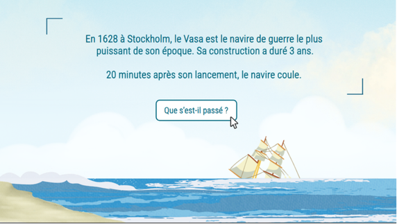
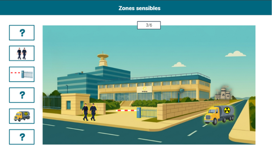
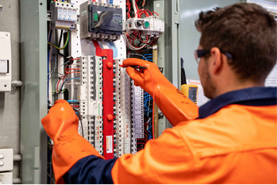
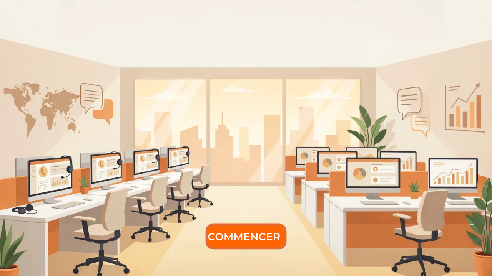
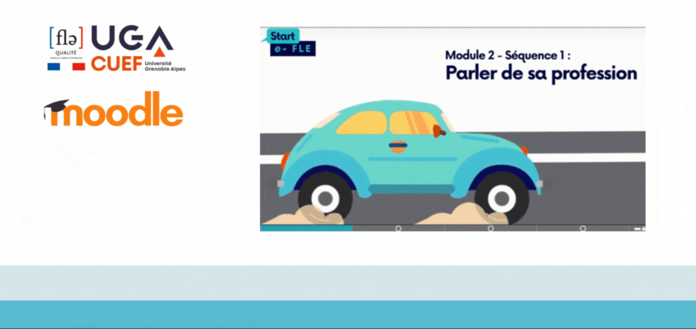
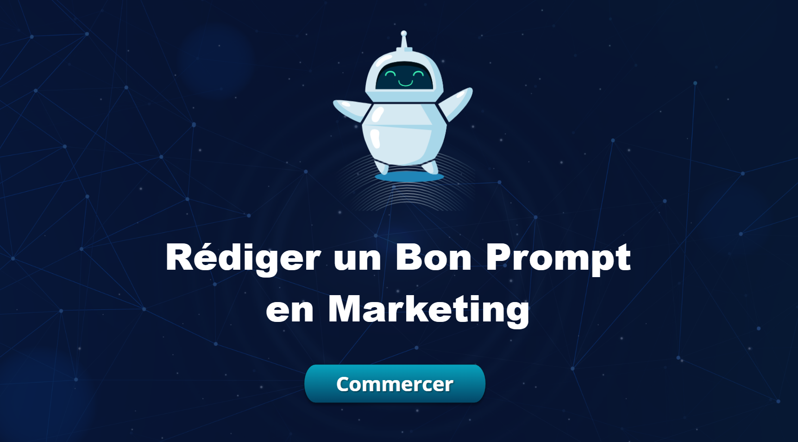
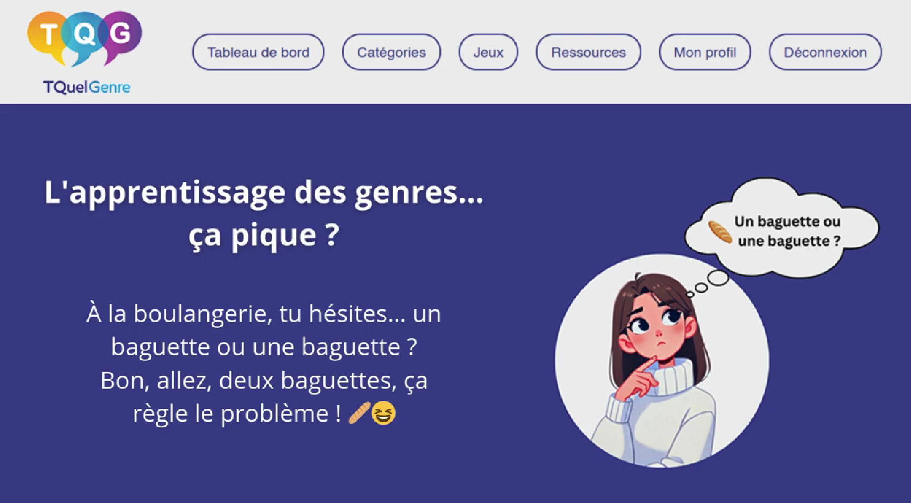
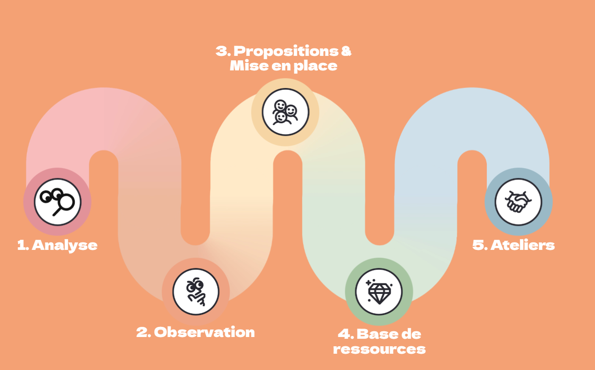
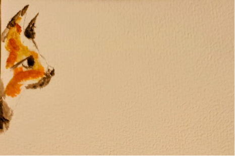
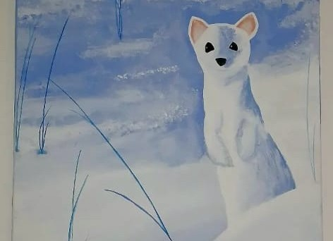

E-Learning « La mesure industrielle chez Orano »
Module e-learning d’initiation à la métrologie industrielle intégrant cas concrets et activités interactives.
Ingénierie pédagogique & Digital Learning
ÉTAPE 01
Passionnée par l’e-learning, le design et l’évaluation formative, j’ai évolué dans l’enseignement, la communication et l’ingénierie pédagogique. Aujourd’hui, j’analyse les situations de travail et accompagne les experts métier dans la transformation de leurs savoir-faire en dispositifs de formation. J’interviens sur la scénarisation pédagogique, la conception de ressources visuelles et multimédias, ainsi que sur l’intégration de contenus sur différents outils auteurs.
ÉTAPE 02
Quelques exemples de réalisations en conception e-learning, production de ressources numériques et intégration.

Module e-learning d’initiation à la métrologie industrielle intégrant cas concrets et activités interactives.

Formation destinée à l’acquisition des fondamentaux de la prise de photographie sur le terrain.

Parcours interactif consacré à la détection de défaillances électriques et au diagnostic terrain.

Dispositif e-learning dédié aux téléconseillers arabophones pour fluidifier l'expression orale et la relation client à travers des appels simulés.

Parcours de français langue étrangère 100 % en autonomie pour grands débutants, préparant aux cours hybrides ou présentiels du CUEF.

Activités interactives pour étudiants en Master Communication/Marketing (B1/B2) afin de concevoir des prompts pertinents en français professionnel.

Apprenez facilement le genre des mots en français avec cette application web interactive alliant mini-jeux ludiques et suivi de progression.

Structuration d'une base de ressources FLE pour formateurs et animation d'ateliers pratiques autour des outils numériques pour formateurs.
ÉTAPE 03
Analyse des besoins, identification des situations de travail, définition des objectifs pédagogiques et structuration des parcours de formation. Co-conception avec les experts métier et les enseignants, conception d’activités d’apprentissage fondées sur des approches actives et animation d’ateliers collaboratifs.
Conception et production de ressources pédagogiques numériques : identités visuelles, illustrations, infographies, animations, vidéos et contenus interactifs. Intégration et paramétrage de contenus dans des LMS et outils auteurs.
Accompagnement des experts métier, des enseignants et des apprenants dans l’appropriation des outils et des méthodes pédagogiques. Conception de guides, tutoriels et animation d’ateliers favorisant l’autonomie numérique.
Promotion des formations et valorisation des projets pédagogiques à travers la conception de campagnes de communication, la création de supports visuels et numériques, l’organisation d’événements et la mise en œuvre d’actions favorisant l’engagement des publics.
ÉTAPE 04

ÉTAPE 05
Comprendre la situation de travail et les compétences à développer.
Je recueille les besoins auprès des parties prenantes afin d’identifier les objectifs visés, les contraintes du terrain et les situations professionnelles auxquelles les apprenants seront confrontés.
Structuration de la démarche de travail.
J’organise les informations recueillies afin de clarifier les objectifs pédagogiques, le périmètre du projet, les publics visés, les modalités de formation et les indicateurs de réussite.
Transformer l’expertise métier en parcours d’apprentissage.
J’anime des ateliers avec les experts métier et les formateurs pour identifier les compétences à acquérir, les situations de travail significatives et les contenus à intégrer dans le parcours.
Créer des ressources adaptées aux usages.
Création d’identités visuelles, illustrations, personnages, infographies, animations et vidéos pédagogiques. Utilisation d’outils d’intelligence artificielle pour soutenir la conception et la production des ressources.
Rendre le dispositif accessible aux apprenants.
J’intègre les contenus dans les outils de diffusion (LMS, Storyline, Rise, Genially) et réalise leur configuration : organisation des parcours, paramétrage des activités, gestion des accès, suivi de la progression et mise en place des évaluations.
Garantir la qualité du dispositif.
Je réalise les tests fonctionnels et pédagogiques, recueille les retours des utilisateurs et propose les ajustements nécessaires pour améliorer l’expérience d’apprentissage.
Mobiliser l’expertise des acteurs et favoriser leur autonomie.
Animation d’ateliers collaboratifs et de hackathons pédagogiques permettant aux experts métier et aux formateurs de construire collectivement les parcours de formation.
Conception de guides, tutoriels et ateliers de prise en main pour faciliter l’appropriation des outils et renforcer l’autonomie numérique des équipes.
ÉTAPE 06
Au-delà des outils auteurs, ma pratique artistique nourrit mon regard sur la composition, la couleur et la narration visuelle appliquée à la pédagogie.

Conception de l’univers graphique et narratif d’un conte pour enfants, avec des illustrations réalisées à l’aquarelle.

Travail sur la lumière, les textures et l’équilibre visuel.
ÉTAPE 07
Un projet de formation
ou de digital learning en tête ?
Échangeons !
MODULE E-LEARNING
Module interactif destiné aux étudiants de Master Communication / Marketing (niveau B1/B2 en français). Les activités guident l'apprenant vers la formulation d'un prompt clair, structuré et adapté à une mission marketing, tout en développant le lexique professionnel en français.
Approche pédagogique : exercices interactifs progressifs axés sur la structuration de prompts efficaces et l'acquisition du vocabulaire spécialisé en marketing.